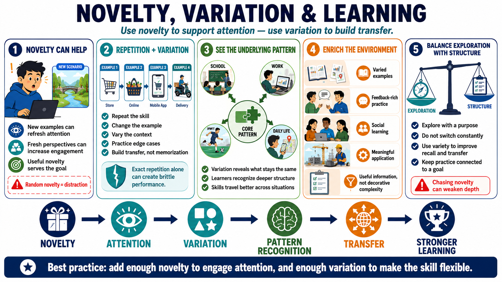

Novelty, Variety, and Enriched Learning
Connecting to LMS... Progress: in progress

Narration
Novelty can increase attention and engagement when it is used intentionally. A new example, a different scenario, or a fresh perspective can make learners notice the material again. But random novelty can become distraction. The design question is whether novelty serves the learning goal or merely creates stimulation.
Repetition with variation is a powerful learning principle. Learners need repeated practice, but exact repetition alone can create brittle performance. Changing examples, contexts, constraints, and edge cases helps learners understand what transfers across situations. The learner begins to see the underlying pattern rather than memorizing one familiar version of the task.
Enriched learning environments, at a practical level, include varied examples, feedback-rich settings, social learning, and opportunities to apply ideas in meaningful contexts. This does not require elaborate equipment. A richer environment might simply include better examples, peer review, realistic constraints, and time to compare attempts. The value comes from useful information, not decorative complexity.
Exploration should be balanced with structure. Learners can benefit from trying different examples and approaches, but constant switching can prevent depth. Useful variety is connected to a goal: improve transfer, reveal exceptions, strengthen recall, or prepare for real-world conditions. Variety should support learning, not become a habit of chasing novelty whenever practice becomes effortful.